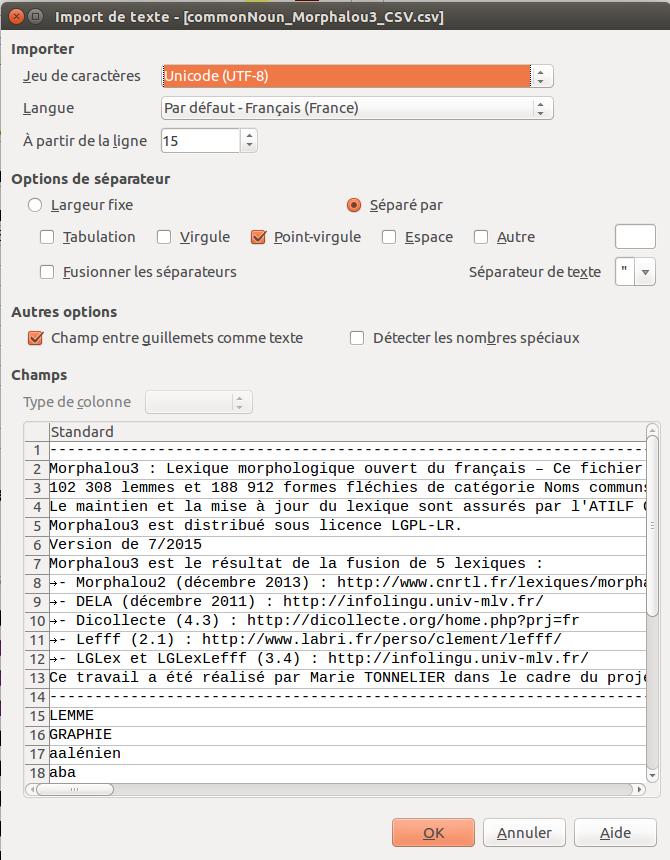

Lexique morphologique ouvert du français
Juin 2015
Résumé
Morphalou3 comprend 159 271 lemmes et 954 690 formes fléchies, du français moderne. Ce document présente toutes les informations concernant Morphalou3 : composition, formats, données, jeu d'étiquettes et statistiques.Table des matières
Ce travail a été réalisé avec l'aide précieuse de Sandrine OLLINGER, Christophe BENZITOUN, Evelyne JACQUEY, Ulrike FLEURY et Étienne PETITJEAN, de l'ATILF.
Morphalou3 est un lexique à large couverture. Les lexies sont accessibles par leurs formes lemmatiques (forme canonique non fléchie). À chacun de ces lemmes sont associées toutes ses formes fléchies (déclinaisons et conjugaisons du lemme). Par exemple le lemme nom commun « reine » donne deux formes fléchies : « reine » (singulier) et « reines » (pluriel.)
Les informations grammaticales sont précisées pour les lemmes (catégorie, sous-catégorie, s'il s'agit d'une locution, genre, variantes orthographiques, variante pronominale et variante masculine si c'est un nom commun féminin) et pour les formes fléchies (nombre, genre, mode, temps et personne, si approprié).
Les lexies présentes dans Morphalou3 correspondent essentiellement aux formes orthographiques standards, mais certaines entrées sont en orthographe non standard, comme par exemple le lemme « paske » (conjonction de subordination) qui est une variante orthographique du lemme « parce que », ou le lemme « tjs » (adverbe) qui est une variante orthographique du lemme « toujours ». Morphalou3 contient également les nouvelles graphies des mots concernés par les rectifications de l’orthographe proposées en 1990 par le Conseil supérieur à la langue française et par l’Académie française.
Le lexique Morphalou3 comprend également la trancription phonétique de 93 681 lemmes et 504 898 formes fléchies.
Pour chaque lemme et chaque forme fléchie, indication est faite de son ou ses lexiques d'origine.
Morphalou3 est diffusé sous licence LGPL-LR (Lesser General Public License For Linguistic Resources). Cette licence libre, adaptée aux ressources linguistiques, garantit la liberté de partage et de modification des données. Voir le texte intégral de la licence.
La version 3 de Morphalou a été obtenue par la fusion de cinq lexiques :
Morphalou 2 (version de décembre 2013)
DELA (version de décembre 2011)
Dicollecte (version 4.3)
LGLex et LGLexLefff (version 3.4)
Lefff (version 2.1 avril 2006)
Cette fusion a permis d'augmenter et corriger le contenu de près de 70 000 lemmes et plus de 500 000 formes fléchies. Elle a également permis de redéfinir le jeu d'étiquettes, décrit en détail dans un chapitre dédié.
Une partie des données des lexiques ont été ignorées, essentiellement les noms propres et mots composés. (Voir la section Quels lemmes font partie ou non de Morphalou3 ?)
Un travail de corrections manuelles a également été opéré.
Le lexique Morphalou est un lexique ouvert des formes fléchies du français. Les données initiales de Morphalou proviennent du TLFnome, la nomenclature du Trésor de la Langue Française qui a fourni 539 413 formes fléchies, appartenant à 68 075 lemmes. Le transfert du TLFnome vers Morphalou s'est fait par une réorganisation structurelle des données et une normalisation des étiquettes grammaticales, sans perte d'informations linguistiques. Le lexique résultant est un lexique à large couverture (~540 000 formes fléchies), linguistiquement valide (sous la responsabilité d'un comité éditorial) et formellement en accord avec les propositions de normalisation pour les ressources lexicales du TAL à l'ISO (TC37/SC4). Il est en accès libre à des fins de recherche et d'enseignement. Le maintien et la mise à jour du lexique sont assurés par l'ATILF. Cette ressource est distribué sur le CNRTL.
Site web : http://www.cnrtl.fr/lexiques/morphalou/
Exemple 1. Les entrées pour le lemme « exemple »
-
Format XML :
<lexicalEntry id="exemple_1"> <formSet> <lemmatizedForm> <orthography>exemple</orthography> <grammaticalCategory>commonNoun</grammaticalCategory> <grammaticalGender>masculine</grammaticalGender> </lemmatizedForm> <inflectedForm> <orthography>exemple</orthography> <grammaticalNumber>singular</grammaticalNumber> </inflectedForm> <inflectedForm> <orthography>exemples</orthography> <grammaticalNumber>plural</grammaticalNumber> </inflectedForm> </formSet> <originatingEntry target="TLF">EXEMPLE, subst. masc.</originatingEntry> </lexicalEntry>
-
Format MySQL :
- Lemme :
26164, 'exemple', 'commonNoun', 'masculine', NULL, NULL, 'E g z a~ p l @', 'E g z a~ p l @', 'EXEMPLE, subst. Masc.', 0
Formes fléchies :
26164, 'exemple', 'commonNoun', 'masculine', NULL, NULL, 'E g z a~ p l @', 'E g z a~ p l @', 'EXEMPLE, subst. Masc.', 0
26164, 'exemples', 'plural', NULL, NULL, NULL, NULL, 'E g z a~ p l @', 'E g z a~ p l @', NULL
- Lemme :
DELA est un dictionnaire fléchi du français, constitué de mots simples, mots composés et noms propres tels qu'ils apparaissent dans les textes et de leurs étiquettes grammaticales. Chaque mot possède un code morphologique qui permet d'engendrer automatiquement toutes ses formes fléchies. Les formes fléchies ont donc été obtenues automatiquement.
Responsable : Laboratoire d'informatique Gaspard-Monge, de l'Université Paris-Est Marne-la-vallée
Licence : LGPLLR
Site web : http://infolingu.univ-mlv.fr/DonneesLinguistiques/Dictionnaires/telechargement.html
Exemple 2. Les entrées pour le lemme « exemple »
-
exemple,.N+z1:ms
-
exemple concret,.N+NA+z1:ms
-
exemple de jurisprudence,.N+NDN:ms
-
exemple entre mille,.N+NPN+z1:ms
-
exemple frappant,.N+NA+z1:ms
-
exemple type,.N+NA+z1:ms
-
exemple unique,.N+NA+z1:ms
-
exemple vivant,.N+NA+z1:ms
-
exemple à suivre,.N+NPV+Hum:ms
-
exemples,exemple.N+z1:mp
-
exemples frappants,exemple frappant.N+NA+z1:mp
-
exemples vivants,exemple vivant.N+NA+z1:mp
-
exemples à suivre,exemple à suivre.N+NPV+Hum:mp
Dicollecte est une ressource linguistique open source. C'est un lexique français de formes fléchies générées. Il contient les rectifications de l'orthographe proposées en 1990 par le Conseil supérieur à la langue française et par l'Académie française. Dicollecte vise à améliorer les dictionnaires orthographiques français pour les logiciels libres, comme LibreOffice, OpenOffice, Firefox, Thunderbird, Evolution, Pidgin, Notepad++, Eclipse, etc., ainsi que tous les logiciels utilisant le correcteur orthographique Hunspell.
(C'est une ancienne version de Dicollecte qui a été intégrée à Morphalou3, et qui ne comprend donc pas les améliorations des versions 5 et supérieures.)
Responsable : Olivier R.
Licence : MPL (Mozilla Public License) et GPL (GNU General Public License) et LGPL (GNU Lesser General Public License) (C'est avec l'accord du responsable de Dicollecte que nous diffusons sous licence LGPL-LR le contenu de Dicollecte qui a été intégré au sein de Morphalou3.)
Site web : http://dicollecte.org/home.php?prj=fr
Exemple 3. Les entrées pour le lemme « exemple »
-
145453 exemple exemple nom mas sg 13438985 111270 33275 13583530 1 0.029929721321115
-
145453 exemples exemple nom mas pl 2507550 10310 6539 2524399 1 0.005562218257942
Le Lefff est un lexique des formes fléchies du français à large couverture, associant à chaque forme son lemme, ses traits morphologiques et d'autres champs récemment disponibles.
Ce lexique a été obtenu par diverses techniques, dont :
- acquisition automatique (avec validation manuelle) à l'aide de techniques statistiques appliquées sur des corpus bruts
- acquisition automatique (avec validation manuelle) d'informations syntaxiques atomiques
- par correction et ajouts manuels ou guidés par des techniques automatiques, comme par exemple la fouille d'erreurs dans les sorties d'analyseurs syntaxiques
- pour certains noms, adjectifs et adverbes, par l'exploitation du lexique morphologique Multext pour le français
Responsables : Institut National de Recherche en Informatique et en Automatique (INRIA) Lionel Clément et Benoît Sagot, Bordeaux
Licence : LGPLLR (Lesser General Public License for Linguistic Resources
Site web : http://www.labri.fr/perso/clement/lefff/
Exemple 4. Les entrées pour le lemme « exemple »
-
ex. nc [pred='exemple_____1<suj:(sn),objde:(de-sn|de-sinf),obja:(à-sinf)>',cat=nc,@m]
-
exemple nc [pred='exemple_____1<suj:(sn),objde:(de-sn|de-sinf),obja:(à-sinf)>',cat=nc,@ms]
-
exemple ncpred [pred='exemple_____1<suj:sn|sinf|scompl,obja:(à-sn|sur-sn)>',lightverb=prendre,cat=nc]
-
exemples nc [pred='exemple_____1<suj:(sn),objde:(de-sn|de-sinf),obja:(à-sinf)>',cat=nc,@mp]
LGLex est un lexique syntaxique des verbes simples, des noms prédicatifs, des expressions figées et des adverbes du français au format texte et XML, généré par LGExtract à partir des tables du Lexique-Grammaire.
LGLexLefff est un lexique syntaxique des verbes simples et des noms prédicatifs du français converti au format Lefff à partir du lexique LGLex.
Licence : LGPLLR
Site web : http://infolingu.univ-mlv.fr/DonneesLinguistiques/Lexiques-Grammaires/Telechargement.html
Exemple 5. Les entrées pour le lemme « exemple »
- LGLex (format texte) :
lexical-info=[cat="noun",Vsup=[cat="verb",list=(value="avoir")],detN=[list-det-modif=(det-modif=[det="un+une",modif="true",value-modif="certain"], det-modif=[det="un+une",modif="false"]),noun=[notperm=[complete="exemple"],noun1="exemple"]],prepositions=()]
lexical-info=[cat="noun",Vsup=[cat="verb",list=(value="donner")],detN=[list-det-modif=(det-modif=[det="le",modif="false"], det-modif=[det="le+l'+la",modif="true"]),noun=[notperm=[complete="exemple"],noun1="exemple"]],prepositions=(),Vconv=[cat="verb",list=(value="recevoir")]] example=[example="Max (montre+donne) l'exemple de la politesse à Luc"]
lexical-info=[cat="noun",Vsup=[cat="verb",list=(value="donner")],detN=[list-det-modif=(det-modif=[det="le",modif="false"]), noun=[notperm=[complete="bon exemple"],noun1="bon exemple"]],prepositions=(),Vconv=[cat="verb",list=(value="recevoir")]]
lexical-info=[cat="noun",Vsup=[cat="verb",list=(value="donner")],detN=[list-det-modif=(det-modif=[det="le",modif="false"]), noun=[notperm=[complete="mauvais exemple"],noun1="mauvais exemple"]],prepositions=(),Vconv=[cat="verb",list=(value="recevoir")]]
- LGLexLefff :
exemple___N_an09_113_ nc-2m 100;Lemma;cf;<Suj:cln|sn>;cat=nc,@SujN-hum,lightverb=avoir;%default # BASE CONSTR = N0 avoir Det N () [] <> ; orig base constr = N0 avoir Det N
exemple___N_dr2_131_ nc-2m 100;Lemma;cf;<Suj:cln|sn,Objà:à-sn>;cat=nc,@ObjàNhum,@SujNhum,lightverb=donner;%default Ex.: Max (montre+donne) l'exemple de la politesse à Luc # BASE CONSTR = N0 donner Det N à N1 () [] <> ; orig base constr = N0 donner Det N à N1
bon exemple___N_dr3_53_ inv 100;Lemma;cf;<Suj:cln|sn,Objà:à-sn>;cat=nc,@ObjàNhum,@SujNhum,lightverb=donner;%default # BASE CONSTR = N0 donner Det N à N1 () [] <> ; orig base constr = N0 donner Det N à N1
mauvais exemple___N_dr3_244_ inv 100;Lemma;cf;<Suj:cln|sn,Objà:à-sn>;cat=nc,@ObjàNhum,@SujNhum,lightverb=donner;%default # BASE CONSTR = N0 donner Det N à N1 () [] <> ; orig base constr = N0 donner Det N à N1
Cette section étudie l'origine des nouveaux lemmes et des nouvelles formes fléchies, qui n'étaient pas présentes dans Morphalou2 et ont donc été ajoutées[1].
Attention : un même lemme, ou une même forme fléchie, peut être issue de plusieurs lexiques à la fois.
65 581 lemmes, non présents dans Morphalou2, ont été ajoutés dans Morphalou3.
465 943 nouvelles formes fléchies, non présentes dans Morphalou2, ont été ajoutées dans Morphalou3.
Remarque : Lorsqu'un lemme n'avait aucune forme fléchie, la forme lemmatique a été ajoutée comme forme fléchie, la majorité des formes n'ayant aucun lexique d'origine correspondent à ce cas.

Tableau 1. Origines des nouveaux lemmes (non présents dans Morphalou2)
| Catégorie \ Lexique d'origine | Total | Dela | Dicollecte | Lefff | LGLex | LGLexLefff | Aucun |
|---|---|---|---|---|---|---|---|
| Toutes catégories confondues | 66 581 | 52 330 | 18 438 | 11 705 | 1 428 | 1 379 | 3 |
| Noms communs | 43 311 | 36 067 | 11 337 | 7 717 | 466 | 221 | 0 |
| Adjectifs qualificatifs | 13 864 | 10 340 | 5 254 | 2 091 | 40 | 0 | 0 |
| Verbes | 5 972 | 4 514 | 1 340 | 818 | 103 | 1 158 | 2 (auxiliaires dupliqués) |
| Adverbes | 1 707 | 1 196 | 264 | 599 | 816 | 0 | 0 |
| Nombres | 163 | 68 | 161 | 0 | 0 | 0 | 1 (« un ») |
| Interjections | 159 | 88 | 41 | 66 | 0 | 0 | 0 |
| Prépositions | 204 | 23 | 9 | 179 | 3 | 0 | 0 |
| Pronoms | 63 | 19 | 7 | 56 | 0 | 0 | 0 |
| Conjonctions | 151 | 10 | 1 | 146 | 0 | 0 | 0 |
| Déterminants | 38 | 5 | 5 | 33 | 0 | 0 | 0 |
| Aucune | 19 | 0 | 19 | 0 | 0 | 0 | 0 |
Tableau 2. Origines des nouvelles formes fléchies (non présentes dans Morphalou2)
| Catégorie \ Lexique d'origine | Total | Dela | Dicollecte | Lefff | LGLex | LGLexLefff | Aucun |
|---|---|---|---|---|---|---|---|
| Toutes catégories confondues | 465 943 | 376 310 | 126 414 | 75 502 | 1 643 | 22 966 | 20 590 |
| Noms communs | 108 643 | 80 430 | 33 034 | 21 114 | 0 | 690 | 9 897 |
| Adjectifs qualificatifs | 51 468 | 33 723 | 20 718 | 7 670 | 57 | 0 | 4 652 |
| Verbes | 301 575 | 259 987 | 71 782 | 45 016 | 120 | 22 276 | 5 469 |
| Adverbes | 2 558 | 1 867 | 563 | 806 | 1 462 | 0 | 151 |
| Nombres | 178 | 74 | 170 | 0 | 0 | 0 | 6 |
| Interjections | 240 | 100 | 55 | 68 | 0 | 0 | 62 |
| Prépositions | 360 | 36 | 16 | 321 | 3 | 0 | 2 |
| Pronoms | 159 | 56 | 30 | 130 | 0 | 0 | 11 |
| Conjonctions | 275 | 14 | 2 | 262 | 0 | 0 | 4 |
| Déterminants | 133 | 23 | 24 | 115 | 1 | 0 | 2 |
| Aucune | 354 | 0 | 20 | 0 | 0 | 0 | 334 |
Cette section étudie les lexiques d'origine de tous les lemmes et formes fléchies de Morphalou3 (celles présentes dans Morphalou2 et les nouvelles).
Attention : une entrée peut être présente dans plusieurs lexiques à la fois.
Cette section étudie les entrées issues de plusieurs lexiques à la fois. Si une entrée est présente dans plusieurs lexiques, alors celle-ci a un indice de confiance a priori plus élevé.
Sur les 159 271 lemmes présents dans Morphalou3, 48% sont issus de plusieurs lexiques
Sur les 954 690 formes fléchies présentes dans Morphalou3, 42% sont issues de plusieurs lexiques.
Tableau 3. Lemmes issus de plusieurs lexiques
| Catégorie \ Nombre exact de lexiques d'origine | Les 6 lexiques | 5 lexiques | 4 lexiques | 3 lexiques | 2 lexiques | 1 lexique | Aucun (créé dans Morphalou3) | Nombre total de lemmes de Morphalou3 |
|---|---|---|---|---|---|---|---|---|
| Toutes catégories confondues | 8 168 | 5 862 | 29 774 | 16 563 | 22 354 | 76 547 | 3 | 159 271 |
| Noms communs | 6 085 | 578 | 21 523 | 9 612 | 13 566 | 50 874 | 0 | 102 238 |
| « abasourdissement » | « abrupt »... | « abaca »... | « abaisse »... | « aalénien »... | « aba »... | |||
| Adjectifs qualificatifs | 0 | 1 024 | 6 646 | 5 165 | 5 915 | 17 773 | 0 | 36 523 |
| « aboulique »... | « abaissable »... | « abaisseur »... | « aalénien »... | « abattant »... | ||||
| Verbes | 2 083 | 2 937 | 1 084 | 986 | 1 913 | 5 757 | 2 | 14 762 |
| « abasourdir »... | « abaisser »... | « abcéder »... | « aberrer »... | « abalourdir »... | « s'abader »... | « avoir »... | ||
| Adverbes | 0 | 1 314 | 420 | 656 | 776 | 991 | 0 | 4 157 |
| « abjectement »... | « absurdement »... | « abandonnément »... | « adent »... | « ablativo »... | ||||
| Nombres | 0 | 0 | 0 | 29 | 69 | 99 | 1 | 198 |
| « cent »... | « quatre-vingt »... | « six-vingt »... | « un » | |||||
| Interjections | 0 | 0 | 10 | 85 | 72 | 255 | 0 | 422 |
| « ah »... | « allô »... | « adieu »... | « acré »... | |||||
| Prépositions | 0 | 8 | 29 | 9 | 15 | 197 | 0 | 258 |
| « après »... | « avant »... | « dessous »... | « fors »... | « maugré »... | ||||
| Pronoms | 0 | 0 | 33 | 14 | 12 | 62 | 0 | 121 |
| « aucun »... | « auquel »... | « autre »... | « mien »... | |||||
| Conjonctions | 0 | 0 | 15 | 3 | 11 | 150 | 0 | 179 |
| « car »... | « comment »... | « afin que »... | « ergo »... | |||||
| Déterminants | 0 | 1 | 14 | 4 | 3 | 35 | 0 | 57 |
| « le » | « ce »... | « certain »... | « divers »... | « icelui »... | ||||
| Aucune | 0 | 0 | 0 | 0 | 2 | 354 | 0 | 356 |
| « ouais » | « vive »... |
Tableau 4. Flexions issues de plusieurs lexiques
| Catégorie \ Nombre exact de lexiques d'origine | Les 6 lexiques | 5 lexiques | 4 lexiques | 3 lexiques | 2 lexiques | 1 lexique | Aucun (créé dans Morphalou3) | Nombre total de flexions de Morphalou3 |
|---|---|---|---|---|---|---|---|---|
| Toutes catégories confondues | 8 | 86 296 | 209 526 | 114 315 | 143 103 | 380 852 | 20 590 | 954 690 |
| Noms communs | 0 | 11 917 | 41 067 | 18 141 | 21 760 | 86 130 | 9 897 | 188 912 |
| « abasourdissement »... | « abaca »... | « abaisse »... | « aalénien »... | « aaléniens »... | « à-bas »... | |||
| Adjectifs qualificatifs | 0 | 855 | 21 493 | 14 501 | 15 546 | 41 923 | 4 652 | 98 970 |
| « aboulique »... | « abaissable »... | « abaisseur »... | « aalénien »... | « abattant »... | « aaronide »... | |||
| Verbes | 8 | 72 357 | 146 399 | 81 117 | 104 421 | 250 766 | 5 469 | 660 537 |
| « courbaturer »... | « abaissasses »... | « abaissa »... | « abasourdisses »... | « abaisse »... | « abada »... | « abrègera »... | ||
| Adverbes | 0 | 1 157 | 449 | 390 | 1 155 | 865 | 151 | 4 168 |
| « abjectement »... | « absurdement »... | « abandonnément »... | « adent »... | « ablativo »... | « adoncque »... | |||
| Nombres | 0 | 0 | 0 | 24 | 72 | 100 | 6 | 202 |
| « cent »... | « dix »... | « II »... | « six-vingt »... | |||||
| Interjections | 0 | 0 | 9 | 80 | 66 | 205 | 62 | 422 |
| « ah »... | « allô »... | « adieu »... | « acré »... | « bast »... | ||||
| Prépositions | 0 | 8 | 28 | 7 | 20 | 347 | 2 | 412 |
| « après »... | « avant »... | « dessous »... | « fors »... | « contr' »... | « maugré »... | |||
| Pronoms | 0 | 0 | 42 | 30 | 32 | 119 | 11 | 234 |
| « aucun »... | « aucune »... | « auxquelles »... | « leurs »... | « m' »... | ||||
| Conjonctions | 0 | 0 | 15 | 2 | 11 | 265 | 4 | 297 |
| « car »... | « comment »... | « lorsqu' »... | « ergo »... | « afin de »... | ||||
| Déterminants | 0 | 2 | 24 | 23 | 19 | 111 | 2 | 181 |
| « l' » | « ce »... | « cet »... | « certain »... | « au »... | « icelles »... | |||
| Aucune | 0 | 0 | 0 | 0 | 1 | 21 | 334 | 356 |
| « ouais » | « vive »... | « ab hoc et ab hac »... |
Morphalou3 est diffusé avec sa licence et sa documentation. Tous les fichiers sont codés en UTF-8.
Sauf pour le format MySQL, le lexique complet est diffusé :
- Soit avec toutes les entrées du lexique dans un seul fichier.
- Soit avec une répartion des entrées dans
plusieurs fichiers, afin d'alléger la taille
des fichiers à traiter et d'en faciliter l'ouverture par des
logiciels. Dans ce cas, les entrées sont regroupées en 6
grandes catégories :
- Adjectifs qualificatifs (« adjective »)
- Adverbes (« adverb »)
- Noms communs (« commonNoun »)
- Mots grammaticaux, c'est-à-dire les nombres, les prépositions, les pronoms, les conjonctions et les déterminants (« grammaticalWords »)
- Interjections (« interjection »)
- Non catégorisées (« noCategory »)
Text Encoding Initiative (TEI) est un consortium qui développe et maintient un standard pour les représentations de textes sous forme digitale.
Pour Morphalou3, nous utilisons principalement le module « dictionaries ».
Le schéma XML RELAX NG est fourni.
Exemple 6. Entrée « exemple »
<!-- commonNoun masculine "exemple" -->
<entry xml:id="e26164">
<form type="lemma" corresp="morphalou2-tlf#EXEMPLE{commonNoun} dela#exemple{N+z1} dicollecte#exemple{nom} lglex#N_an09_113{noun} lglexlefff#exemple___N_an09_113_{nc-2m} lefff#exemple{nc} lefff#exemple{ncpred}">
<orth>exemple</orth>
<pron>E g z a~ p l @</pron>
<gramGrp>
<pos>commonNoun</pos>
<gen>masculine</gen>
</gramGrp>
</form>
<form type="inflected" corresp="morphalou2-morphalou1#exemple dela#exemple dicollecte#exemple lglexlefff#exemple lefff#exemple">
<orth>exemple</orth>
<pron>E g z a~ p l @</pron>
<gramGrp>
<number>singular</number>
</gramGrp>
</form>
<form type="inflected" corresp="morphalou2-morphalou1#exemples dela#exemples dicollecte#exemples lglexlefff#exemples lefff#exemples">
<orth>exemples</orth>
<pron>E g z a~ p l @</pron>
<gramGrp>
<number>plural</number>
</gramGrp>
</form>
</entry>
Lexical Markup Framework (LMF ou cadre de balisage lexical, en français) est le standard de l'Organisation internationale de normalisation (plus spécifiquement au sein de l'ISO/TC37) pour les lexiques du traitement automatique des langues (TAL). C'est le format de Morphalou2
Morphalou3 est exporté selon l'ancien format de Morphalou2, avec quelques rajouts :
- l'élément grammaticalSubCategory après grammaticalCategory
- l'élément pronominalVariantOf en plus de spellingVariantOf et feminineVariantOf
- l'élément locution
- un ou plusieurs éléments originatingEntry pour chaque lemme, et chaque forme fléchie.
Exemple 7. Entrée « exemple »
<lexicalEntry id="exemple_1"> <formSet> <lemmatizedForm> <orthography>exemple</orthography> <grammaticalCategory>commonNoun</grammaticalCategory> <grammaticalGender>masculine</grammaticalGender> <originatingEntry target="morphalou2" originatingCategory="commonNoun">EXEMPLE, subst. masc.</originatingEntry> <originatingEntry target="dela" originatingCategory="N+z1">exemple</originatingEntry> <originatingEntry target="dicollecte" originatingCategory="nom">exemple</originatingEntry> <originatingEntry target="lglex" originatingCategory="noun">exemple</originatingEntry> <originatingEntry target="lglexlefff" originatingCategory="nc-2m">exemple___N_an09_113_</originatingEntry> <originatingEntry target="lefff" originatingCategory="nc">exemple</originatingEntry> <originatingEntry target="lefff" originatingCategory="ncpred">exemple</originatingEntry> </lemmatizedForm> <inflectedForm> <orthography>exemple</orthography> <grammaticalNumber>singular</grammaticalNumber> <originatingEntry target="morphalou2">exemple</originatingEntry> <originatingEntry target="dela">exemple</originatingEntry> <originatingEntry target="dicollecte">exemple</originatingEntry> <originatingEntry target="lglexlefff">exemple</originatingEntry> <originatingEntry target="lefff">exemple</originatingEntry> </inflectedForm> <inflectedForm> <orthography>exemples</orthography> <grammaticalNumber>plural</grammaticalNumber> <originatingEntry target="morphalou2">exemples</originatingEntry> <originatingEntry target="dela">exemples</originatingEntry> <originatingEntry target="dicollecte">exemples</originatingEntry> <originatingEntry target="lglexlefff">exemples</originatingEntry> <originatingEntry target="lefff">exemples</originatingEntry> </inflectedForm> </formSet> </lexicalEntry>
Comma-Separated-Values (CSV) est un format informatique ouvert représentant des données tabulaires sous forme de valeurs séparées par des virgules (ou autre séparateur). Un fichier CSV est un fichier texte, par opposition aux formats dits « binaires ». Chaque ligne du texte correspond à une ligne du tableau et les virgules correspondent aux séparations entre les colonnes. Les portions de texte séparées par une virgule correspondent ainsi aux contenus des cellules du tableau.
Ce format présente l'avantage de pouvoir être utilisé par des logiciels tableurs, comme Microsoft Excel ou LibreOffice Calc.
Voici comment est composé le fichier CSV :
- Les 14 premières lignes ne sont pas des données, mais l'entête du fichier.
- Les lignes 15 et 16 sont les titres des colonnes. (Il y a 2 lignes de titre).
- Les données commencent à la ligne 17. Une forme fléchie par ligne. (Détails ci-après.)
Exemple 8. Entête et lignes de titres
Voici la configuration pour l'importation dans LibreOffice Calc :
Voici les lignes du fichier CSV contenant les titres :
LEMME;;;;;;;;;FLEXION;;;;;;;; GRAPHIE;ID;CATÉGORIE;SOUS CATÉGORIE;LOCUTION;GENRE;AUTRES LEMMES LIÉS;PHONÉTIQUE;ORIGINES;GRAPHIE;ID;NOMBRE;MODE;GENRE;TEMPS;PERSONNE;PHONÉTIQUE;ORIGINES
Pour Morphalou3, nous utilisons le point virgule (;) comme séparateur. Lemmes et formes fléchies sont regroupées pour en faciliter la lecture : en premier les informations sur le lemme et ensuite les informations sur la forme fléchie. Une ligne pour chaque forme fléchie. Si un lemme donne plusieurs formes fléchies, alors les informations sur le lemme ne sont pas répétées et les cases correspondantes sont vides, comme dans l'exemple 9 ci-dessous.
Exemple 9. Entrée « exemple »
Voici l'entrée du lemme « exemple » (2 formes fléchies donc 2 lignes):
exemple;26164;commonNoun;-;-;masculine;-;-;-;E g z a~ p l @;E g z a~ p l @;morphalou2 dela dicollecte lglex lglexlefff lefff;exemple;224747;singular;-;-;-;-;E g z a~ p l @;E g z a~ p l @;morphalou2 dela dicollecte lglexlefff lefff ;;;;;;;;;;;;exemples;224748;plural;-;-;-;-;E g z a~ p l @;E g z a~ p l @;morphalou2 dela dicollecte lglexlefff lefff
Voici enfin le résultat tel qu'affiché par le tableur LibreOffice Calc :
MySQL est un système de gestion de bases de données relationnelles. Il est distribué sous licence GPL.
Morphalou3 est disponible sous forme de 4 fichiers MySQL de création de table, un fichier pour chaque table de la base de données.
Le format MySQL de Morphalou3 conserve toutes les informations de tous les lexiques, et notamment toutes les entrées d'origine qui ont été utilisés pour constituer Morphalou3.
Remarque : Attention à importer d'abord le fichier lemma.sql puis le fichier inflection.sql puis les deux autres, afin de respecter les dépendances des clés étrangères.
Sur un serveur PHP, vous pouvez utiliser phpMyAdmin, interface web de gestion de SGBD MySQL pour importer la base de données Morphalou3.
Le lemme est l'unité de base morpho-syntaxique.
lemmaID
Un numéro unique identifiant le lemme. (Les identifiants de Morphalou2 sont les mêmes dans Morphalou3.)
content
La valeur du lemme
category
L'étiquette de premier niveau du lemme (ou rien s'il n'y en a pas).
Les catégories possibles sont : 'commonNoun','verb','adjective','interjection','adverb','preposition','pronoun','determiner','conjunction' et 'numeral'.
subCategory
L'étiquette de second niveau du lemme, c'est-à-dire sa sous-catégorie (ou rien s'il n'y en a pas).
Les sous-catégories possibles sont : 'people', 'abbreviation','auxiliary','impersonal','defective','onomatopoeia','negation','determinant','adjective','demonstrative','possessive','personal','relative','indefinite','interrogative','exclamatory','definite','negative','subordination' et 'coordination'
gender
Le genre du nom :
- « masculine » = masculin
- « feminine » = féminin
- « invariable » = invariable (identique au masculin et au féminin.)
- non renseigné si le lemme n'est pas un nom ou si c'est l'un des trois noms dont le genre varie selon le nombre (voir Le genre d'une forme fléchie).
variantOf
Une référence vers le lemme original en cas de variante orthographique (ou rien si le lemme n'est pas une variante).
feminineOf
Si le lemme est un nom commun et la version féminine d'un autre lemme, alors ce champ est renseigné et est une réference vers le lemme masculin. Sinon ce champ n'est pas renseigné.
Attention il n'a pas été possible de détecter automatiquement selon la morphologie toutes les correspondances. Par exemple le nom « aire » n'est pas le féminin du nom « air », « fane » n'est pas le féminin de « fan », « fraise » n'est pas le féminin de « frais ». Ce champ n'est donc pas forcément renseigné chaque fois qu'il devrait l'être.
pronominalOf
Une référence vers le lemme original en cas de version pronominal d'un verbe (ou rien si le lemme n'est pas une variante pronominale d'un autre verbe).
Des transcriptions phonétiques du lemme (ou rien si non renseigné).
processStatus
Un indicateur hérité de Morphalou2.
Un indicateur sur le lemme ajouté au passage à la version 3 de Morphalou.
L'état (ou statut) peut être 'verifiedManually' ou 'verifiedByScript' ou 'correctedByScript' ou 'correctedManually' ou 'toDelete' ou 'toComplete' (pour les verbes surtout) ou 'toStudy' ou 'incorrect' ou 'toVerifyManually' ou 'spelling1990'. Par défaut, le status est 'toStudy'.
Un lemme est décliné en une ou plusieurs formes fléchies.
inflectionID
Un numéro unique identifiant la forme fléchie. (Les identifiants de Morphalou2 sont les mêmes dans Morphalou3.)
lemmaID
L'identifiant du lemme dont est issue cette forme fléchie.
content
La valeur de la forme fléchie.
number
Le nombre de la forme fléchie, c'est-à-dire la distinction entre singulier et pluriel grammaticaux. Le nombre d'une forme fléchie est soit :
- « singular » = singulier
- « plural » = pluriel
- « invariable » = invariable (la forme fléchie est identique au singulier et au pluriel.)
- non renseigné si ce champ n'a pas lieu d'être : pour les participes présent et les infinitifs.
mood
Le mode d'un verbe :
- « indicative » = infinitif
- « participle » = participe (passé pou présent)
- « subjunctive » = subjonctif
- « imperative » = impératif
- « infinitive » = infinitif
- « conditional » = conditionnel
- non renseigné si le lemme correspondant n'est pas un verbe.
Le genre de la forme fléchie :
- « masculine » = masculin
- « feminine » = féminin
- « invariable » = invariable (identique au masculin et au féminin.)
- « neuter » = neutre (ni masculin, ni féminin.)
- non renseigné si ce champ n'a pas lieu d'être.
Il est à noter que le genre d'un nom est défini dans sa forme fléchie — et non au niveau du lemme — pour les noms dont le genre varie selon le nombre, à savoir « amour », « délice » et « orgue ».
tense
Le temps auquel le verbe est conjugué :
- « present » = présent
- « future » = futur
- « past » = passé
- « imperfect » = imparfait
- « simplePast » = passé simple
- non renseigné si le lemme n'est pas un verbe.
person
La personne grammaticale à laquelle la forme fléchie fait référence :
- « firstPerson » = première personne
- « secondPerson » = deuxième personne
- « thirdPerson » = troisième personne
- non renseigné si ce champ n'a pas lieu d'être : c'est-à-dire si le lemme n'est ni un déterminant possessif, ni un pronom démonstratif, ni un pronom possessif, ni certaines formes fléchies d'un verbe.
phonetic1 et phonetic2
status
Un lemme a une ou plusieurs entrée(s) d'origine, c'est-à-dire un extrait d'un lexique décrivant ce lemme.
id
Un numéro unique identifiant l'entrée d'origine.
lemmaID
L'identifiant du lemme correspondant à cette entrée.
lexicon
Le nom du lexique dont a été extraite cette entrée, soit « morphalou2 », soit « dela », soit « dicollecte », soit « lglex », soit « lglexlefff ».
category
L'étiquette du lemme dans son lexique d'origine.
Une forme fléchie peut avoir une ou plusieurs entrée(s) d'origine.
Idem que pour un lemme, mais sans la mention de la catégorie d'origine.
Une même forme de mot peut apparaître dans plusieurs catégories. C'est-à-dire que l'on peut avoir plusieurs formes (lemmatiques ou formes fléchies) de catégories lexicales différentes et pourtant orthographiées de la même manière. Par exemple :
- « un » peut être un déterminant (C'est un homme) ou un chiffre (Un homme et deux femmes).
- « bon » peut être un nom (Les bons et les mauvais), un adjectif (Ce plat est bon) ou une interjection (Bon, finissons-en).
- « porte » est ambigu comme forme fléchie (nom ou verbe conjugé), mais pas comme lemme (le verbe « porter » est différent du nom commun « porte »).
- Nom commun + Adjectif : 11 873 lemmes concernés (Exemples : « clair »)
- Nom commun + Verbe : 142 lemmes concernés (Exemples : « agir », « aller », « bûcher », « clocher », « poster »)
- Nom commun + Adverbe : 115 lemmes concernés (Exemples : « alentour », « au-delà », « doublement », « environ »)
- Nom commun + Interjection : 104 lemmes concernés - dont 33 onomatopées) (Exemples : « adieu », « amen », « attention », « stop »)
- Nom commun + Adjectif qualificatif + Adverbe : 67 lemmes concernés (Exemples : « aidant », « bas », « beau », « juste »)
- Adjectif qualificatif + Adverbe : 50 lemmes concernés (Exemples : « attenant », « cher », « perso », « sûr »)
- Nom commun + Adjectif qualitificatif + Adverbe + Préposition : « avant », « ci-devant », « passé », « pendant »
- Nom commun + Adjectif qualificatif + Adverbe + Interjection : « arrière », « bis », « bon »
- Adverbe + Conjonction de coordination + Conjonction de subordination + Préposition : « comme », « sinon »
- Nom commun + Adjectif qualificatif + Déterminant indéfini + Pronom indéfini : « certain », « nul »
- Nom commun + Adjectif qualificatif + Adverbe + Conjonction de subordination : « bref », « partant »
- Nom commun + Déterminant indéfini + Pronom indéfini + Nombre : « un »
- Nom commun + Adverbe + Conjonction de subordination + Pronom interrogatif : « pourquoi »
- Adverbe de négation + Conjonction de subordination + Pronom interrogatif + Pronom relatif : « que »
- Nom commun + Adjectif qualificatif + Adverbe + Pronom indéfini : « même »
- Nom commun + Adjectif qualificatif + Adverbe + Déterminant indéfini + Pronom indéfini : « tout »
- Nom comment + Adverbe + Conjonction de subordination + Interjection + Pronom interrogatif : « comment »
Une même orthographe de forme fléchie peut se retrouver dans des lemmes différents. Par exemple « croissant » peut être un nom commun, un adjectif ou le participe présent du verbe « croître » ou la variante « croitre » issue des rectifications orthographiques du français en 1990 (voir le chapitre sur les variantes orthographiques).
De même pour les verbes qui existent sous la forme pronominale et non pronominale. Il existe un lemme commençant par « se » et un lemme ne commençant pas par « se », cependant leurs formes fléchies auront la même orthographe. Par exemple : « s'endormir » et « endormir » auront tout deux les formes fléchies « endormis », « endormons », etc.
-
Adjectif qualificatif + Nom commun + Verbe + Verbe : 136 formes fléchies (Exemples : « accru », « ascendant », « cannelle », « croissant », « frite »)
-
Adjectif qualificatif + Adjectif qualificatif + Nom commun + Nom commun : 71 formes fléchies concernées (Exemples : « acéracées », « antirides », « fol », « néo-fasciste », « partageuse »).
Remarque : En fait, la plupart de ces formes fléchies sont issues de lemmes dupliqués - à tort ou à raison - et les lemmes possiblement dupliqués devraient être étudiés au cas par cas pour décider s'ils doivent être réunis ou non (Exemple : lemmes « acéracées » et « acéracée », lemmes « fol » et « fou ».
-
Adjectif qualificatif + Nom commun + Nom commun + Verbe : 53 formes fléchies concernées (Exemples : « alliés », « barbes », « bouffes », « facilitées »)
Même remarque que ci-dessus
-
Adjectif qualificatif + Adjectif qualificatif + Nom commun + Verbe : 23 formes fléchies concernées) (Exemples : « affine », « converse », « patronne », « surprise »)
Remarque : Une partie de ces formes fléchies sont dûes à une erreur de rattachement des formes fléchies aux noms communs - qui ont un lemme féminin et un lemme masculin (voir la section suivante). Par exemple, « patronnes » ne devrait pas être une forme fléchie du lemme « patron », mais uniquement du lemme « patronne »
Pour les noms communs existant au masculin et au féminin :
- Si le féminin est différent du masculin : on distingue deux lemmes, l'un masculin et l'autre féminin (avec une référence vers le lemme masculin). Par exemple « acheteuse » est le féminin d'« acheteur ».
- Si le féminin et le masculin sont identiques : on a a un seule lemme de genre invariable. Par exemple « extra-terrestre » est de genre invariable (un extra-terrestre ou une extra-terrestre.)
Les variantes orthographiques d'un lemme devraient être présentes comme lemmes à part entière avec mention du lemme d'origine (via le champ « variantOf »).
Sont acceptées notamment les rectifications orthographiques du français de 1990. Par exemple :
- Le verbe « abimer » est une variante de « abîmer ».
- Le verbe « accroitre » est une variante de « accroître ».
Voici d'autres variantes non issues de la rectification de 1990 :
- « béqueter » et « bèqueter » sont des variantes orthographiques de « becqueter ».
- « bouloter » est une variante de « boulotter ».
- Le nom commun « abattage » est la variante de « abatage ».
- L'adverbe « affetuoso » est la variante de « affettuoso ».
- L'interjection « allô » est la variante de « allo ».
- L'interjection « pschtt » est la variante de « pscht ».
- Les adverbes « chouia » et « chouya » sont des variantes de « chouïa ».
Les verbes pronominaux commencent par « se » et mentionnent le lemme non pronominal s'il existe. Les formes fléchies ne contiennent pas de pronoms.
Par exemple : dans Morphalou3 existent le verbe « blottir » et le verbe pronominal « se blottir » (dont le champ « pronominalOf » fait référence au verbe « blottir »). Les formes fléchies de ces deux verbes sont de type « blottir », « blottira », « blottirai », etc.
Les mots tronqués sont les mots amputés d'une partie de ce qui les constitue comme mots, sans pour autant que leur interprétation en soit nécessairement affectées. Ces mots tronqués ont des formes diverses, appartiennent surtout à la langue orale familière, et certains n'ont pas de formes écrites bien fixées.
On peut les classer comme abréviations, avec une référence vers le nom complet.
Exemples : le lemme « gynéco » est classé comme abbréviation et comme variante du nom commun (masculin) « gynécologue ». De même « démago » est l'abbréviation de « démagogue »
Morphalou ne devrait pas contenir de préfixes, ni de suffixes.
DELA et Dicollecte contiennent des préfixes (catégorie « PFX » dans DELA et « pfx » dans Dicollecte). Ils n'ont pas été importés dans Morphalou3.
Exemples : « néo » ; « aéro » ; « cellulo » ; « alcoolo » ; « bi » ; « hétéro » ; « mini » ; « ortho » ; « acéto » ; « absdomino » ; « académico »
On peut trouver certains de ces préfixes dans Morphalou 2 et donc dans Morphalou3, étiquetés comme noms communs ou adjectifs. Certains ne sont que des préfixes, comme « aéro », d'autres existent à part entière, comme l'adjectif « mini ».
Les noms propres n'ont pas leur place dans Morphalou, mais dans Prolex (base multilingue de noms propres.) http://cnrtl.fr/lexiques/prolex
Certaines locutions font partie de Morphalou3, issues de Morphalou2 et du Lefff. Un marquage a été fait des lemmes étant des locutions, à partir d'une recherche automatique sur le Wiktionnaire.
Voici des exemples de ce que sont des locutions et groupes nominaux :
- Locutions adverbiales : « en revanche » ; « par contre »
- Locutions verbales : « faire florès » ; « avoir beau »
- Locutions nominales : « à l'eau » ; « par rapport à »
- Locutions prépositionnelles : « à partir »
- Groupe nominal : « étude de marché », « éducation physique »
Pourtant, certaines unités lexicales devraient être présentes comme lemmes à part entière. C'est le cas des :
- mots composés : « roman-photo », « rouge-gorge » ; « sèche-cheveux » ; « aigre-doux » ; « lance-missiles » ; « laisser-faire » ; « en-tête »
- locutions ne pouvant être employées séparément, souvent latines : « a priori »
- conglomérés : « main-d'oeuvre », « pied-à-terre », « va-nu-pieds », « va-et-vient », « à la va-vite »
- synapsies, c'est-à-dire certains composés constituant un groupe entier de lexèmes et formant une désignation constante et spécifique : « pomme de terre » ; « robe de chambre » ; « clair de lune » ; « armoire à provisions » ; « machine à écrire » ; « avion à réaction »...
Les mots contenant des espaces n'ont pas été importés depuis DELA, Dicollecte, LGLex et LGLexLefff. Par contre, ces mots présents dans Morphalou2 n'ont pas été supprimés dans la version 3 qui comporte encore des lemmes contenant des espaces, dont certains sont clairement des locutions :
- un nombre : « trente-six mille », issu de locutions.
- des adverbes : « autour de » , « contre-mont à »
- des adjectifs qualificatifs : « en suspens », « amiable à l' »
- toutes les conjonctions n'ayant pas de sous-catégories : « afin de », « afin que », « c'est-à-dire que »
- Mais la plupart de ces lemmes se retrouvent sans catégorie : « affile d' », « affilée d' », « à l'envers », « à pic »
Et d'autres ont leur place dans Morphalou :
- deux verbes : « rock and roller » et « pique niquer », variante de « pique-niquer »
- des interjections : « ho! ho! », « oh la la », « plan plan »
- des adjectifs qualificatifs: « ad hoc », « ex abrupto »
- des noms communs : « agnus dei », « à priori », « alter ego »
- des lemmes sans catégorie : « ab intestat »
Bref, cela fait environ 400 lemmes restant à étudier au cas par cas.
Un nouveau jeu d'étiquettes a été créé pour catégoriser les lemmes de la version 3 de Morphalou. Il s'agit d'un classement à deux niveaux :
- une catégorie
- éventuellement une sous-catégorie
Il est à noter qu'après classification, certains lemmes restent sans catégorie.
Les mots ayant plusieurs catégories sont étudiés dans le chapitre précédent Un même mot dans plusieurs catégories.
Ce jeu d'étiquettes est mis en correspondance avec d'autres jeux d'étiquettes :
- L'étiqueteur MarsaTag (http://sldr.org/voir_depot.php?lang=fr&id=841)
- L'étiqueteur morpho-syntaxique TreeTagger (http://www.cis.uni-muenchen.de/~schmid/tools/TreeTagger/)
- Le format générique MULTEXT (http://aune.lpl-aix.fr/projects/multext/lex/LEX2_3.html)
On distingue deux grands ensembles de lemmes :
- les mots lexicaux
Ce sont les noms, les verbes, les adjectifs qualificatifs, les adverbes et les interjections. Ils sont en très grand nombre, de longueur variable et peuvent être créés s'il y a besoin. Certains mots lexicaux peuvent être remplacés par des pronoms.
- les mots grammaticaux ou
mots-outils
Ce sont les mots dont le rôle syntaxique est plus important que le rôle sémantique. Ils incluent les articles, les déterminants, les pronoms, les prépositions et les adjectifs non qualitatifs. Ils n'ont qu'une seule fonction. Ils sont limités en nombre, la création de nouveaux mots grammaticaux est très rare, ils sont fréquents et peu précis. Ils ne peuvent pas être remplacés par des pronoms. Les mots grammaticaux sont souvent très courts.
Morphalou3 contient :
- 102 238 noms communs - 188 912 formes fléchies
- 36 523 adjectifs qualificatifs - 98 970 formes fléchies
- 14 762 verbes - 660 537 formes fléchies
- 4 157 adverbes - 4 167 formes fléchies
- 422 interjections - 422 formes fléchies
Voici un tableau récapitulatif décrivant les 4 catégories de mots lexicaux de Morphalou3, leurs lexiques d'origine, et leurs correspondances avec d'autres jeux d'étiquettes.
La colonne « Lemme » indique les informations relatives au lemme (la forme canonique) tandis que « Forme(s) fléchie(s) » indique les informations relatives aux déclinaisons et conjugaisons de ce lemme.
Tableau 5. Les mots lexicaux dans Morphalou3
Morphalou3 contient :
- 258 prépositions - 412 formes fléchies
- 198 nombres - 202 formes fléchies
- 179 conjonctions - 297 formes fléchies
- 121 pronoms - 234 formes fléchies
- 57 déterminants - 181 formes fléchies
- et 356 lemmes non catégorisés - 356 formes fléchies
Voici un tableau récapitulatif décrivant les 5 catégories de mots grammaticaux de Morphalou3, leurs lexiques d'origine, et leurs correspondances avec les étiqueteurs et catégories génériques.
La colonne "Lemme" indique les informations relatives au lemme spécifiques à la catégorie décrite.
Tableau 6. Les mots grammaticaux dans Morphalou3
| Morphalou3 |
Lexiques d'origine (lexique(s) ayant défini l'étiquette) | Correspondances | |||||||||
|---|---|---|---|---|---|---|---|---|---|---|---|
| Catégorie | Sous-catégorie | Code | Description | Quantité | Exemples | Lemme | Forme(s) fléchie(s) | MarsaTag | TreeTagger | MULTEXT | |
| preposition | ∅ ou abbreviation | PREP | Toutes les prépositions. | 254 |
| ∅ | 1 forme fléchie (ou 2 si variante exemple "jusque" "jusqu"). |
| SD- | PRP | Adposition |
| adjective | PREP:adj | Préposition + déterminant | 2 |
| 1, 2, 3 ou 4 variant en nombre et genre |
| Sd ou D- | ||||
| determinant | PREP:det | Préposition + article | 2 |
|
| ||||||
| numeral | ∅ | NUM | Tous les chiffres, c'est-à-dire les adjectifs numéraux cardinaux | 198 |
| ∅ | 1 seule forme fléchie (sauf pour le lemme « un » qui varie en genre et le lemme « quatre-vingt » qui peur aussi s'écrire « quatre-vingts ») |
| Ak | NUM | Numeral |
| conjunction | subordination | CONJ:sub | Toutes les conjonctions de subordinations | 139 |
| ∅ | 1 forme fléchie. |
| Cs | KON | Conjunction |
| coordination | CONJ:coo | Toutes les conjonctions de coordination | 40 |
|
| Cc | |||||
| pronoun | indefinite | PRON:ind | Les pronoms indéfinis | 38 |
| ∅ | 1 à 4 formes fléchies variant éventuellement en nombre et/ou genre |
| Pi | PRO:IND | Pronoun |
| interrogative | PRON:int | Les pronoms interrogatifs | 12 |
|
| Pt | PRO | ||||
| relative | PRON:rel | Les pronoms relatifs | 9 |
|
| Pr | PRO:REL | ||||
| demonstrative | PRON:dem | Les pronoms démonstratifs | 9 |
|
| Pd | ∅ | ||||
| personal | PRON:per | Les pronoms personnels | 42 |
| 1 à 4 formes fléchies variant éventuellement en nombre et en genre, avec mention de la personne (première, deuxième ou troisième personne). |
| Pp... | PRO:PER | |||
| possessive | PRON:pos | Les pronoms possessifs | 11 |
|
| Ps | PRO:POS | ||||
| determiner | indefinite | DET:ind | Les adjectifs indéfinis et articles partitifs | 40 |
| 1,2,3 ou 4 formes fléchies variant en nombre et en genre |
| Ai | Determiner | ||
| demonstrative | DET:dem | Les adjectifs démonstratifs | 5 |
|
| ? | ∅ | ||||
| definite | DET:def | Les articles définis. | 4 |
|
| ? | DET:ART | ||||
| exclamatory | DET:exc | Les adjectifs exclamatifs | 1 |
|
| ? | ∅ | ||||
| possessive | DET:pos | Les adjectifs possessifs | 7 |
| Indication sur la personne en plus |
| As | DET:POS | |||
| ∅ | ∅ ou abbreviation | XXX | Toutes les autres mots grammaticaux. La plupart sont des locutions ou des parties de locutions, latines ou françaises. (Voir le chapitre sur les cas ambigus) | 356 | Voici quelques exemples de
lemmes non classés :
| ∅ | 1 forme fléchie. |
| ? | ∅ | ∅ |
Les données statistiques sont détaillées sur cette page. (Attention cette page contient plus de 100 000 lignes et est par conséquent longue à afficher.)
Preamble
The licenses for most data are designed to take away your freedom to share and change it. By contrast, this License is intended to guarantee your freedom to share and change free data--to make sure the data are free for all their users.
This license, the Lesser General Public License for Linguistic Resources, applies to some specially designated linguistic resources -- typically lexicons, grammars, thesauri and textual corpora.
TERMS AND CONDITIONS FOR COPYING, DISTRIBUTION AND MODIFICATION
0. This License Agreement applies to any Linguistic Resource which contains a notice placed by the copyright holder or other authorized party saying it may be distributed under the terms of this Lesser General Public License for Linguistic Resources (also called "this License"). Each licensee is addressed as "you".
A "linguistic resource" means a collection of data about language prepared so as to be used with application programs.
The "Linguistic Resource", below, refers to any such work which has been distributed under these terms. A "work based on the Linguistic Resource" means either the Linguistic Resource or any derivative work under copyright law: that is to say, a work containing the Linguistic Resource or a portion of it, either verbatim or with modifications and/or translated straightforwardly into another language. (Hereinafter, translation is included without limitation in the term "modification".)
"Legible form" for a linguistic resource means the preferred formst of the resource for making modifications to it.
Activities other than copying, distribution and modification are not covered by this License; they are outside its scope. The act of running a program using the Linguistic Resource is not restricted, and output from such a program is covered only if its contents constitute a work based on the Linguistic Resource (independent of the use of the Linguistic Resource in a tool for writing it). Whether that is true depends on what the program that uses the Linguistic Resource does.
1. You may copy and distribute verbatim copies of the Linguistic Resource as you receive it, in any medium, provided that you conspicuously and appropriately publish on each copy an appropriate copyright notice and disclaimer of warranty; keep intact all the notices that refer to this License and to the absence of any warranty; and distribute a copy of this License along with the Linguistic Resource.
You may charge a fee for the physical act of transferring a copy, and you may at your option offer warranty protection in exchange for a fee.
2. You may modify your copy or copies of the Linguistic Resource or any portion of it, thus forming a work based on the Linguistic Resource, and copy and distribute such modifications or work under the terms of Section 1 above, provided that you also meet all of these conditions:
a) The modified work must itself be a linguistic resource.
b) You must cause the files modified to carry prominent notices stating that you changed the files and the date of any change.
c) You must cause the whole of the work to be licensed at no charge to all third parties under the terms of this License.
These requirements apply to the modified work as a whole. If identifiable sections of that work are not derived from the Linguistic Resource, and can be reasonably considered independent and separate works in themselves, then this License, and its terms, do not apply to those sections when you distribute them as separate works. But when you distribute the same sections as part of a whole which is a work based on the Linguistic Resource, the distribution of the whole must be on the terms of this License, whose permissions for other licensees extend to the entire whole, and thus to each and every part regardless of who wrote it.
Thus, it is not the intent of this section to claim rights or contest your rights to work written entirely by you; rather, the intent is to exercise the right to control the distribution of derivative or collective works based on the Linguistic Resource.
In addition, mere aggregation of another work not based on the Linguistic Resource with the Linguistic Resource (or with a work based on the Linguistic Resource) on a volume of a storage or distribution medium does not bring the other work under the scope of this License.
3. A program that contains no derivative of any portion of the Linguistic Resource, but is designed to work with the Linguistic Resource (or an encrypted form of the Linguistic Resource) by reading it or being compiled or linked with it, is called a "work that uses the Linguistic Resource". Such a work, in isolation, is not a derivative work of the Linguistic Resource, and therefore falls outside the scope of this License.
However, combining a "work that uses the Linguistic Resource" with the Linguistic Resource (or an encrypted form of the Linguistic Resource) creates a package that is a derivative of the Linguistic Resource (because it contains portions of the Linguistic Resource), rather than a "work that uses the Linguistic Resource". If the package is a derivative of the Linguistic Resource, you may distribute the package under the terms of Section 4. Any works containing that package also fall under Section 4.
4. As an exception to the Sections above, you may also combine a "work that uses the Linguistic Resource" with the Linguistic Resource (or an encrypted form of the Linguistic Resource) to produce a package containing portions of the Linguistic Resource, and distribute that package under terms of your choice, provided that the terms permit modification of the package for the customer's own use and reverse engineering for debugging such modifications.
You must give prominent notice with each copy of the package that the Linguistic Resource is used in it and that the Linguistic Resource and its use are covered by this License. You must supply a copy of this License. If the package during execution displays copyright notices, you must include the copyright notice for the Linguistic Resource among them, as well as a reference directing the user to the copy of this License. Also, you must do one of these things:
a) Accompany the package with the complete corresponding machine-readable legible form of the Linguistic Resource including whatever changes were used in the package (which must be distributed under Sections 1 and 2 above); and, if the package contains an encrypted form of the Linguistic Resource, with the complete machine-readable "work that uses the Linguistic Resource", as object code and/or source code, so that the user can modify the Linguistic Resource and then encrypt it to produce a modified package containing the modified Linguistic Resource.
b) Use a suitable mechanism for combining with the Linguistic Resource. A suitable mechanism is one that will operate properly with a modified version of the Linguistic Resource, if the user installs one, as long as the modified version is interface-compatible with the version that the package was made with.
c) Accompany the package with a written offer, valid for at least three years, to give the same user the materials specified in Subsection 4a, above, for a charge no more than the cost of performing this distribution.
d) If distribution of the package is made by offering access to copy from a designated place, offer equivalent access to copy the above specified materials from the same place.
e) Verify that the user has already received a copy of these materials or that you have already sent this user a copy.
If the package includes an encrypted form of the Linguistic Resource, the required form of the "work that uses the Linguistic Resource" must include any data and utility programs needed for reproducing the package from it. However, as a special exception, the materials to be distributed need not include anything that is normally distributed (in either source or binary form) with the major components (compiler, kernel, and so on) of the operating system on which the executable runs, unless that component itself accompanies the executable.
It may happen that this requirement contradicts the license restrictions of proprietary libraries that do not normally accompany the operating system. Such a contradiction means you cannot use both them and the Linguistic Resource together in a package that you distribute.
5. You may not copy, modify, sublicense, link with, or distribute the Linguistic Resource except as expressly provided under this License. Any attempt otherwise to copy, modify, sublicense, link with, or distribute the Linguistic Resource is void, and will automatically terminate your rights under this License. However, parties who have received copies, or rights, from you under this License will not have their licenses terminated so long as such parties remain in full compliance.
6. You are not required to accept this License, since you have not signed it. However, nothing else grants you permission to modify or distribute the Linguistic Resource or its derivative works. These actions are prohibited by law if you do not accept this License. Therefore, by modifying or distributing the Linguistic Resource (or any work based on the Linguistic Resource), you indicate your acceptance of this License to do so, and all its terms and conditions for copying, distributing or modifying the Linguistic Resource or works based on it.
7. Each time you redistribute the Linguistic Resource (or any work based on the Linguistic Resource), the recipient automatically receives a license from the original licensor to copy, distribute, link with or modify the Linguistic Resource subject to these terms and conditions. You may not impose any further restrictions on the recipients' exercise of the rights granted herein. You are not responsible for enforcing compliance by third parties with this License.
8. If, as a consequence of a court judgment or allegation of patent infringement or for any other reason (not limited to patent issues), conditions are imposed on you (whether by court order, agreement or otherwise) that contradict the conditions of this License, they do not excuse you from the conditions of this License. If you cannot distribute so as to satisfy simultaneously your obligations under this License and any other pertinent obligations, then as a consequence you may not distribute the Linguistic Resource at all. For example, if a patent license would not permit royalty-free redistribution of the Linguistic Resource by all those who receive copies directly or indirectly through you, then the only way you could satisfy both it and this License would be to refrain entirely from distribution of the Linguistic Resource.
If any portion of this section is held invalid or unenforceable under any particular circumstance, the balance of the section is intended to apply, and the section as a whole is intended to apply in other circumstances.
It is not the purpose of this section to induce you to infringe any patents or other property right claims or to contest validity of any such claims; this section has the sole purpose of protecting the integrity of the free resource distribution system which is implemented by public license practices. Many people have made generous contributions to the wide range of data distributed through that system in reliance on consistent application of that system; it is up to the author/donor to decide if he or she is willing to distribute resources through any other system and a licensee cannot impose that choice.
This section is intended to make thoroughly clear what is believed to be a consequence of the rest of this License.
9. If the distribution and/or use of the Linguistic Resource is restricted in certain countries either by patents or by copyrighted interfaces, the original copyright holder who places the Linguistic Resource under this License may add an explicit geographical distribution limitation excluding those countries, so that distribution is permitted only in or among countries not thus excluded. In such case, this License incorporates the limitation as if written in the body of this License.
10. The Free Software Foundation may publish revised and/or new versions of the Lesser General Public License for Linguistic Resources from time to time. Such new versions will be similar in spirit to the present version, but may differ in detail to address new problems or concerns.
Each version is given a distinguishing version number. If the Linguistic Resource specifies a version number of this License which applies to it and "any later version", you have the option of following the terms and conditions either of that version or of any later version published by the Free Software Foundation. If the Linguistic Resource does not specify a license version number, you may choose any version ever published by the Free Software Foundation.
11. If you wish to incorporate parts of the Linguistic Resource into other free programs whose distribution conditions are incompatible with these, write to the author to ask for permission.
NO WARRANTY
12. BECAUSE THE LINGUISTIC RESOURCE IS LICENSED FREE OF CHARGE, THERE IS NO WARRANTY FOR THE LINGUISTIC RESOURCE, TO THE EXTENT PERMITTED BY APPLICABLE LAW. EXCEPT WHEN OTHERWISE STATED IN WRITING THE COPYRIGHT HOLDERS AND/OR OTHER PARTIES PROVIDE THE LINGUISTIC RESOURCE "AS IS" WITHOUT WARRANTY OF ANY KIND, EITHER EXPRESSED OR IMPLIED, INCLUDING, BUT NOT LIMITED TO, THE IMPLIED WARRANTIES OF MERCHANTABILITY AND FITNESS FOR A PARTICULAR PURPOSE. THE ENTIRE RISK AS TO THE QUALITY AND PERFORMANCE OF THE LINGUISTIC RESOURCE IS WITH YOU. SHOULD THE LINGUISTIC RESOURCE PROVE DEFECTIVE, YOU ASSUME THE COST OF ALL NECESSARY SERVICING, REPAIR OR CORRECTION.
13. IN NO EVENT UNLESS REQUIRED BY APPLICABLE LAW OR AGREED TO IN WRITING WILL ANY COPYRIGHT HOLDER, OR ANY OTHER PARTY WHO MAY MODIFY AND/OR REDISTRIBUTE THE LINGUISTIC RESOURCE AS PERMITTED ABOVE, BE LIABLE TO YOU FOR DAMAGES, INCLUDING ANY GENERAL, SPECIAL, INCIDENTAL OR CONSEQUENTIAL DAMAGES ARISING OUT OF THE USE OR INABILITY TO USE THE LINGUISTIC RESOURCE (INCLUDING BUT NOT LIMITED TO LOSS OF DATA OR DATA BEING RENDERED INACCURATE OR LOSSES SUSTAINED BY YOU OR THIRD PARTIES OR A FAILURE OF THE LINGUISTIC RESOURCE TO OPERATE WITH ANY OTHER SOFTWARE), EVEN IF SUCH HOLDER OR OTHER PARTY HAS BEEN ADVISED OF THE POSSIBILITY OF SUCH DAMAGES.
END OF TERMS AND CONDITIONS
[1] Nous utilisons dans cette documentation la règle de proximité, qui consiste à accorder le genre et le nombre de l'adjectif avec celui du plus proche des noms qu'il qualifie, et le verbe avec le plus proche de ses sujets.